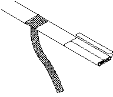

BN Thermic Instruction Sheet
CCSRJ Self Regulating Frost Protection Heat Tapes
INSTALLATION
1) Before applying the heat tape, make sure the area on and around the pipe is free and clear of sharp edges and combustible materials.
2) Apply the heat tape to the pipe either straight or evenly spiralled.
3) The heat tape should be wrapped around valves, flanges etc., to compensate for the extra heat loss.
4) The heat tape can touch and be overlapped if necessary.
5) Secure the heat tape with PVC electrical insulating tape at intervals of not less than 300mm.
6) Make off ends, tee's and connections using approved termination kits and according to the instructions.
7) Insulate overall with fibreglass or similar insulating material, suitably protected from the weather and physical abuse.
8) Make sure that the electrical connections are made in accordance with the appropriate regulations and only by a qualified electrician.
9) It is advisable to fit an over-riding air thermostat.
CAUTION
a) Never connect the heat tape when it is coiled.
b) The heat tape must be protected from physical abuse. e.g. chewing by animals, debris thrown from lawnmowers etc.
c) CCSRJ is intended for frost protection and is not designed for use on high temperature process pipes etc.
d) CCSRJ is not suitable for use in hazardous areas.
POWER TERMINATION
1) Lightly cut around heater overjacket 127mm from the end. Bend cable to break the overjacket.
2) Lightly cut overjacket up the center between first cut mark and the cable end. Bend cable to break the overjacket.
3) Remove overjacket from heater cable.
4) Move braid back toward the overjacket, creating a bulge.
5) At the bulge, separate the braid to make an opening.
6) While bending the heater cable, work it through the braid opening.
7) Pull the braid tight.

8) Lightly cut around heater outer jacket 48mm from the end. Bend cable to break outer jacket.
9) Lightly cut the outer jacket up the center between the first cut mark & the cable end. Bend cable to break outer jacket.

10) Remove the jacket from the heater cable.
11) Shave the core material from the outside of each bus wire.
12) Starting at the end, pull each bus wire away from the core material.
13) Remove exposed core material.
14) Slide one 3mm diameter, 25mm length shrink tube over each bus wire, leaving approximately 13mm of each bus wire exposed. Shrink with heat gun until completely shrunk.
15) Slide a 13mm diameter, 51mm length shrink tube over both pigtail leads leaving approx. 25mm of each pigtail lead exposed. Shrink with heat gun until completely shrunk.
16) While still warm, spread bus wires and squeeze between them using needle-nose pliers, hold for 5 seconds.
END SEAL
1) Strip overjacket and braid back 102mm from the end. Slide braid back over the overjacket portion of the heater cable.
2) Cut off excess heater cable leaving 25mm.
3) At the end of the heater cable, snip a 10mm slit between the bus wires. Slightly spread wires apart.

4) Slide a 13mm diameter, 51mm length shrink tube over the heater cable leaving approximately 25mm of shrink tube past the heater cable. Shrink with heat gun until completely shrunk.
5) While still warm, squeeze the entire width of shrink tube closed. Cut off excess shrink tube.
6) Pull braid over the squeezed shrink tube, covering the entire end seal and twist closed.
7) Fold twisted braid back and slide the 16mm diameter, 76mm length shrink tube over the braid leaving 13mm of shrink tube past the braid. Shrink with heat gun until completely shrunk.
8) While still warm, squeeze shrink tube closed. Make sure to seal
the entire width of tubing.